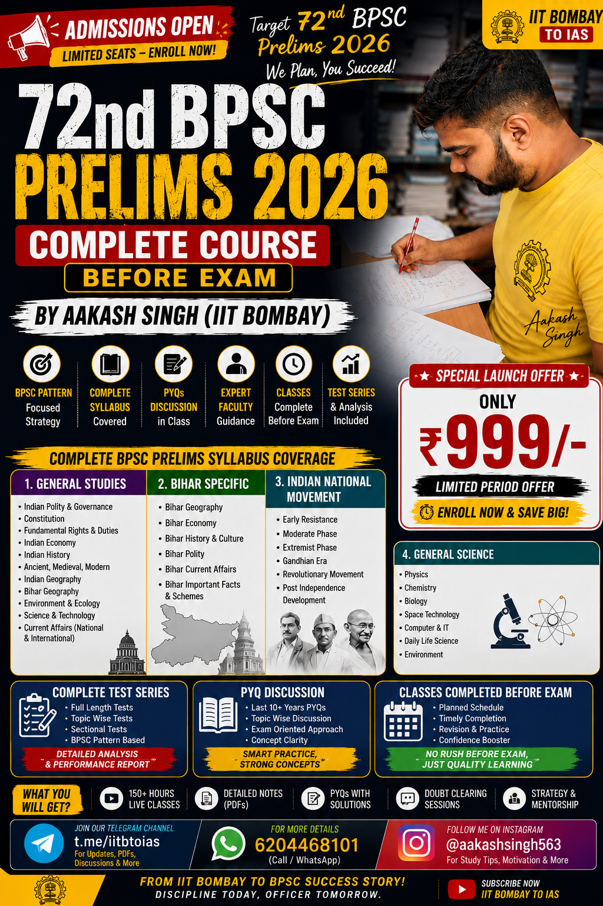

Complete Classroom Program + Test Series + PYQ Discussion
Students preparing for the 72nd BPSC Prelims Examination. Suitable for beginners, working professionals and repeat aspirants who want a structured preparation strategy.
The entire syllabus will be completed before the examination along with revision classes, full-length mock tests, and exam-oriented strategy sessions.
Aakash Singh (IIT Bombay Graduate)
AI Engineer • UPSC Mentor • Educator
The course is designed with a strong focus on conceptual clarity, exam-oriented preparation, PYQ analysis, answer-writing skills, and effective revision strategies.
Yes. The complete syllabus will be finished well before the examination, followed by dedicated revision classes and full-length mock tests.
Yes. Topic-wise and full-length tests are included in the program.
Yes. High-quality class notes and revision PDFs will be provided.
Yes. The course starts from the fundamentals and gradually progresses to the examination level.